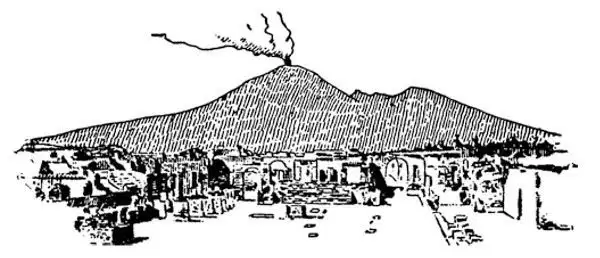

37
Blood and Thunder
血和雷

I once had a big Newfoundland dog, and he was one of the best friends a boy ever had. I don't know who it was that named him; he was named before I got him; but whoever it was must either have been ignorant of history or a bad chooser of names. He was called Nero, and even a dog would have hated such a name, had he known whose it once was.
Every good story usually has a villain to make it interesting. The story of Rome has plenty of villains, but one of the worst was Nero. He was a Roman emperor who lived not long after Christ, and he is considered one of the cruelest and wickedest rulers that ever lived.
He killed his mother. He killed his wife. He killed his teacher, who was named Seneca. Seneca was a very good teacher, too.
We think that Nero ordered both Peter and Paul put to death, for they were executed at the time of Nero's rule.
Nero seemed to take great pleasure in making others suffer. He loved to see men torn to pieces by wild beasts; it amused him greatly. I have seen boys who liked to throw stones at dogs just to hear them yelp, or tear the wings off butterflies. Such boys must have some Nero in them; don't you think?
If a man was a Christian, that gave Nero an excuse to torture him horribly. Nero had some of the Christians wrapped in tar and pitch, then placed around the garden of his palace and set fire to, as if they were torches. It is even said that Nero set Rome on fire just for the fun of seeing the city burn. Then he sat in a tower and, while he watched the blaze spreading played on a stringed instrument. The saying is that “Nero fiddled while Rome burned ” The fire burned day and night for a whole week and destroyed more than half the city. Nero then laid the blame on the Christians, who, he said, started the fire. Did you ever blame someone else for something you had done?
Some think Nero really was crazy, and we hope he was, for it is hard to think any human being who was not crazy could act as he did.
Nero built himself an immense palace and overlaid it extravagantly with gold and mother-of-pearl. It was known as Nero's House of Gold. At its front door he put up a colossal statue of himself in bronze fifty feet high. Both the House of Gold and the statue were later destroyed, but the Colosseum, which was built a few years afterward, was named Colosseum from this coloss-al statue of Nero that was once there.
Nero was very conceited. He thought he could write poetry and sing beautifully. Although he did both very badly, he liked to show off, and no one dared to laugh at him. Had anyone been so bold as to make fun of him or even to smile, he would have had that person put to death instantly.
Even Roman people who were not Christians feared and hated Nero. The military rebelled against him. Before they had a chance to do anything, Nero heard what they were planning, and in order to save himself the disgrace of being put to death by his own people he decided to kill himself. He was such a coward, however, that he couldn't quite bring himself to plunge the sword into his breast. Finally, his slave, impatient to finish the job, shoved the blade in. Thus was Rome rid of one of its worst rulers.
So much for the first part of this blood and thunder story. Here is the second part:
The Jews in Jerusalem didn't like to have Rome rule over them. They never had. Like the Christians, the Jews could not worship the emperor as a god. But they were afraid to do much about it. In the Year 70 A.D. they rebelled; that is, they said they would no longer obey Rome or pay money to the government.
The emperor sent his son, who was named Titus, with an army to put an end to the rebellion, to punish them as if they were disobedient children. The Jews crowded into their city of Jerusalem to make a last stand against the Romans. But Titus destroyed that city completely and the Jews in it, a million of them, it is supposed. Then he robbed the great temple of all its valuable ornaments and brought them back to Rome. The great temple was then destroyed.
To celebrate this victory over Jerusalem an arch was built in the Forum at Rome, and through this arch Titus and his army marched in triumph. On this arch was carved a procession, showing Titus leaving the city of Jerusalem with the temple ornaments. Chief among these ornaments was a golden seven- branched candlestick he had taken from the temple. Today we see many copies in brass of this famous seven-branched candlestick. It is called a menorah , which is the Hebrew word for candlestick.
The city was rebuilt later, but most of the Jews who survived have ever since been living in many other countries of the world. When people leave their homeland and spread, it is called a diaspora .
The third part of this story is the thunder .
In Italy there is a volcano named Vesuvius. You remember that volcano came from the name Vulcan, the blacksmith god, and people imagined that his forge in the heart of a volcano made the smoke and flame and ashes. From time to time this volcano, Vesuvius, thunders and quakes and spouts forth fire and throws up stones and gas and boils over with red-hot melted rock called lava. It is the hot inside of the earth exploding. Yet people build houses and towns nearby and live even on the sides of the volcano. Every once in a while their homes are destroyed when the volcano quakes or pours forth fire. Yet the same people go right back and build again in the same place!

Vesuvius erupting, Pompeii in foreground
维苏威火山爆发，火山脚下的庞贝城
There was at the time of Titus a little town named Pompeii near the base of Vesuvius. Wealthy Romans used to go there to spend the summer. Suddenly, one day in the year 79 A.D., just after Titus had become emperor, Vesuvius began to spout forth fire. The people living in Pompeii rushed for their lives, but they didn't have time to get away. They were smothered with the gases from the volcano before they had time to move and, falling down dead, were buried deep in a boiling rain of fire and ashes, just where they happened to be when the eruption, as it is called, took place.
The people and their houses lay buried beneath the ashes for nearly two thousand years, and in the course of time everyone had forgotten there ever had been such a place. People came back as they had before and built houses over the spot where everyone had forgotten there once was a city. Then one day a man was digging a well over the spot where Pompeii had once been. He dug up a man's hand—no, not a real hand, but the hand of a statue. He told others, and they set to work and dug and dug to see what else they could find until the whole town was dug out. And now one can go to Pompeii and see it very much as it was in 79 A.D. before it was destroyed.
There are houses of the Romans who went there to spend their vacations. There are shops and temples and palaces and public baths and the theater and the market place or forum. The streets were paved with blocks of lava, once melted stone. They still show ruts which were worn into them by the wheels of the chariots that the Romans used to drive. Stepping stones were placed at some crossings, so that in case of heavy rains, when the streets were full of water, one could cross on them from curb to curb. These stepping stones are still there. The floors of the houses were made of bits of colored stone to form pictures. These are called mosaics . They are still there. In the vestibule of one house, there is in the floor a mosaic picture of a dog. Under it are the Latin words, Cave canem . What does that mean? Can you guess? It means, Look out for the dog !
The bones of the people who were caught and buried alive in the ashes were also found. There were also found bronze ornaments worn by the women, vases that decorated the home, pots and pans and dishes, and lamps which they used to light the houses. Beds and chairs were found just as they had been buried. Still more remarkable, cakes were found on the table, a loaf of bread half eaten, meat ready to be cooked, a kettle on the fire with the ashes still underneath it— beans and peas and one egg unbroken—probably the oldest egg in the world!
【中文阅读】
我曾养过一条大纽芬兰犬，它是我孩提时最好的朋友之一。我不知道是哪个家伙给它起的名字；在我拥有它之前，它已经有名字了；但是，不管给它起名的人是谁，这个人肯定不是对历史很无知，就是特别不会起名字。这条纽芬兰犬叫尼禄，即使是只狗，如果它知道这曾是谁的名字，恐怕也会讨厌这样一个名字的。
每个好听的故事里通常都有一个坏蛋，这样故事才有趣。罗马的故事里面有很多坏人，但其中最坏的一个就是尼禄。他是罗马的皇帝，生活在耶稣诞生后不久的年代，他被认为是从古至今最残忍、最邪恶的统治者之一。
他杀了自己的母亲，杀了自己的妻子，还杀死了自己的老师，这位老师名叫塞内加。塞内加也是一位非常好的老师。
我们认为就是尼禄下令将彼得和保罗处死的，因为他们都是在尼禄统治的时期被处死的。
让人吃苦受难尼禄好像就特别开心。他喜欢看人被野兽撕成碎片，这逗得他哈哈大笑。我见过一些男孩子，喜欢朝狗扔石头，就为了听它们兴声急叫，要不然就是扯掉蝴蝶的翅膀。这样的男孩一定有点尼禄那样的性格，你不觉得吗？
如果有人是基督徒，那正好让尼禄有理由来狠狠折磨他了。尼禄让人在一些基督徒身上淋满焦油和沥青，然后放在宫殿花园的四周，再点上火，这些人好像火炬一样烧起来。甚至有人说，尼禄放火烧罗马城，只是为了看见罗马城烧起来觉得好玩。当时，他坐在一座塔楼上，一边看着火势蔓延，一边弹琴。这就是谚语说的“罗马失火，尼禄奏乐”。大火连续烧了七昼夜，毁掉了大半个城市。之后，尼禄把罪责嫁祸给基督徒，说是他们纵的火。你是否曾把自己犯的错误归咎于别人呢？
有些人认为尼禄实际上是个疯子，我们倒希望他真是疯子，因为很难想象任何正常人会像他那样恣意妄为。
尼禄为自己建造了巨大的宫殿，整个宫殿用黄金和珍珠母铺砌而成，极尽奢华。这就是闻名于世的尼禄的“金宫”。在金宫正门口，尼禄竖立了一座巨大的、他本人的青铜雕像，高达50英尺。金宫和雕像后来都被毁掉了，但是几年后，在原址建造了一座大斗兽场，它之所以取名“大”斗兽场，就是因为曾竖立在那里的尼禄雕像是巨“大”的。
尼禄十分自负，认为自己作的诗和唱的歌都美妙动人。其实尽管他两样都很糟糕，但是他却喜欢向人炫耀，没人敢笑话他。如果有人胆敢取笑他，甚至只是笑一笑，他都会立刻让这个人受死。
就连不是基督徒的罗马人都对他又怕又恨。军队开始反叛他。人们还没来得及动手，尼禄就得知了他们正在策划推翻他，为了免受被自己人民处死的耻辱，他决定自杀。然而，他却是个懦夫，怎么也鼓不起勇气把剑刺进自己的胸膛。最后，他的奴隶急于了结此事，就把剑刃猛推进他的身体。罗马人就这样除掉了他们最糟的一个统治者。
这就是我要讲的“血和雷”的故事的第一部分，接下来是第二部分：
耶路撒冷的犹太人不愿让罗马统治自己。他们对罗马人从来都没有甘心俯首过。犹太人和基督徒一样，不可能把皇帝当做神崇拜。但是，他们又不敢贸然行动。公元70年，他们终于造反了；也就是说，他们宣布不再服从罗马的命令，也不再向罗马政府进贡。当时的罗马皇帝派他的儿子提图斯率大军去镇压叛乱，就好像去惩罚一群不听话的孩子。
犹太人涌入他们的耶路撒冷城作最后的抵抗。但是，提图斯彻底摧毁了这座城市，屠杀了城里的犹太人，据说人数有一百万。然后，提图斯把宏伟的圣殿洗劫一空，把里面所有值钱的装饰品都带回了罗马。之后，这座伟大的圣殿被夷为平地。
为了庆祝攻克耶路撒冷的胜利，罗马人在广场上建起了一道凯旋门，提图斯和他的军队在胜利的欢呼声中穿过凯旋门。在这座凯旋门上刻有一列队伍，表现的正是提图斯带着圣殿的装饰品正在离开耶路撒冷的情景。在这些装饰品中，最重要的就是他从圣殿拿走的黄金制成的七枝大灯台。现在，我们可以看到这个闻名的七枝金灯台的许多复制品，不过是用黄铜做的。它有个希伯来语名字叫“米诺拉”，意思是“灯台”。
耶路撒冷城后来又重建了，但是大多数幸存下来的犹太人从此之后就一直散居在世界其他许多国家。一个民族离开祖国、向外迁移的这种情况叫做“大流散”。
故事的第三部分是“雷”。
在意大利，有座火山叫维苏威火山。还记得吧？“火山”(volcano ）一词来源于火神伍尔坎（Vulcan）的名字，伍尔坎也是锻冶之神，人们想象他的锻炉就在火山的中心，是这个锻炉产生了火山的烟尘、火焰和灰烬。这座维苏威火山不时地发出轰鸣声，并剧烈地震动，还喷发出火焰，把石头和气体喷向空中，火山口还漫溢出炽热的、熔化的岩浆，叫熔岩。这是地球内部热量的爆发。可是，人们仍然在火山 的附近建造房屋和城镇，甚至就住在火山坡上。每隔一段时间，火山就会震动喷出火焰，他们的家园就会被毁掉。但是过后，这些人又会回去，仍然在原来的地方盖房子！
在提图斯的时代，在维苏威火山的山脚附近，有个小城镇叫庞贝。罗马的富人们夏天常去那里避暑。公元79年的一天，提图斯刚刚成为皇帝后不久，维苏威火山忽然爆发了。庞贝城的人们为逃命而狂奔，但是已经来不及逃离，火山爆发喷出的气体就使他们窒息了，他们倒地而死，被深埋在从天而降的大量的滚烫的火山灰里，也就正好留在了火山爆发时他们所在的位置。
这些人和他们的房子被埋在火山灰下面将近两千年，经过这么漫长的岁月，人们终于忘记了世界上还有过这样一个地方。人们又像从前一样回到这里，在人们早已忘记这里曾经有一座城市的地方建起了房屋。后来有一天，一个人在庞贝城曾经所在的地方挖井。他挖到了一只人手——不，不是一只真正的手，而是一只雕像的手。他告诉了其他人，他们开始不停地挖啊，挖啊，看看还能挖到其他什么东西，直到整个庞贝城都被挖了出来。现在，人们可以去庞贝遗址参观，现在看到的庞贝城几乎就和公元79年时它还没有被毁掉的时候一样。
遗址里有去庞贝度假的罗马人修建的房子，有店铺、神庙、宫殿、公共浴室、剧院、市场和广场。街道都是用火山岩石块铺成的，这些火山岩曾经是熔化的岩浆，石块上还可以看到辙迹，那是罗马人经常驾的二轮马车的轮子长期碾磨留下的。有一些十字路口放着踏脚石，这样下大雨的时候，如果街上满是积水，人们也能踩着这些踏脚石穿过街道。这些踏脚石现在还在原地。房屋的地面都是用一小块一小块彩色的石头拼起来的，形成了各种图案。这种图案叫“马赛克”，现在也还留在原地。在一家房子门厅的地板上，有一幅一只狗的马赛克图案。这只狗下面还有一句拉丁文，“Cave canem”。这是什么意思？你能猜到吗？它的意思是，“当心这只狗！”
那些困在城里而被活埋在火山灰里的人的遗骨也被发现了，还发现了女人戴的青铜饰物，装饰房间的花瓶、罐子、锅和碗盘，以及他们用于房间照明的灯具。床和椅子也被发现，还是被埋之前的样子。更令人叫绝的是，桌子上还发现有几块蛋糕、一块吃了一半的面包、准备做菜的肉，还有放在炉上的水壶，下面有炉灰——以及蚕豆、豌豆和一个完好无损的鸡蛋——也许是世界上最古老的鸡蛋了！